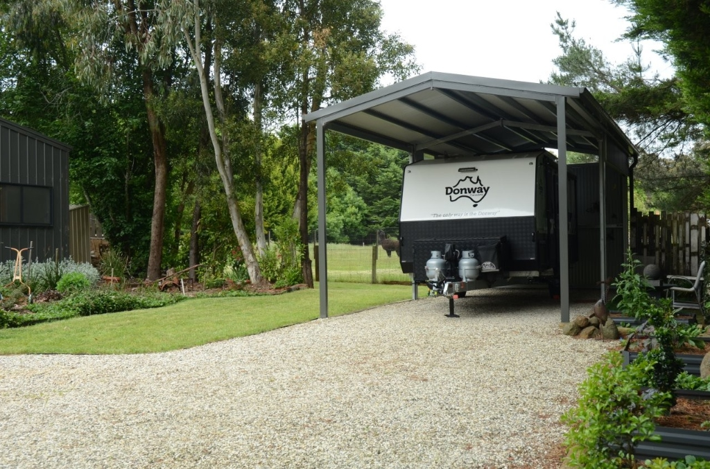

A good caravan shed should do more than keep the rain off. It should make your van easier to park, safer to store, faster to pack, and better protected from the kind of heat, wind, rain and dust Australian properties deal with every year.
The clearest way to compare caravan shed ideas is to group overlapping roof and lean-to variants into distinct storage decisions. Roof shape becomes a design choice inside the right category, not a separate idea.
Before You Choose a Caravan Shed Design
Most people looking for caravan storage sheds are trying to solve a mix of protection, access and space issues. Start by measuring the caravan's full travel length, full width and highest fixed point, then add working room for loading, washing and safe reversing.
4 Caravan Shed Ideas
Each category uses a relevant example from CV Sheds' All Sheds Gallery.

High-Clearance Caravan Carport
A high-clearance caravan carport is a simple option for owners who want overhead protection without fully enclosing the van. It suits UV, rain, hail and leaf litter protection while keeping the van easy to hitch, wash and pack.
The roof shape can be gable, skillion or flatter depending on the site. Those are variants of the same open-shelter idea.
Best for regular travellers Gable variant
Gable variant
 Skillion variant
Skillion variant
 Flat variant
Flat variant
Caravanage + Storage Combo
The open, high-clearance bay gives quick caravan access, while the enclosed garage, side bay or covered storage area can hold the tow vehicle, tools, annex walls, fishing gear, spare parts, mowers, hoses, ramps and travel extras.
This category includes attached awnings, side storage bays, lean-to style storage and garage-plus-open-bay layouts where the goal is shelter plus a practical gear zone.
Best for gear storage Garage bay variant
Garage bay variant

Fully Enclosed Caravan Garage
A fully enclosed caravan garage offers the highest level of protection against sun, rain, dust, pests and unwanted attention. Door clearance is the detail to confirm early.
Natural light, ventilation and personal access doors also matter if the shed will be used for loading, cleaning or maintenance.
Best for long-term storage
Drive-Through Caravan Shed
With openings at both ends, a drive-through layout can remove the need to reverse a large caravan into a tight bay. It is an access solution, not just another shed shape.
It works best where there is enough room to approach, pass through and loop around without sharp turns immediately before or after the shed.
Best for large blocksSummary: Which Caravan Shed Idea Fits?
Once the main layouts are clear, the right choice usually comes down to how often the caravan moves, how much security you need, and whether the shed also has to store gear, tools or another vehicle.
| Idea | Best for | Main advantage | Watch-outs |
|---|---|---|---|
| High-clearance carport | Regular travellers who want fast access. | Open shelter with simple parking, washing and loading. | Less security and less side protection than an enclosed shed. |
| Caravanage + storage combo | Owners who need caravan shelter plus garage, tool or trip-gear storage. | Keeps the caravan bay accessible while adding lockable or covered storage. | Posts, rooflines and storage zones need to be planned together. |
| Fully enclosed garage | Long-term storage and higher-value vans. | Better security, dust protection, weather protection and pest control. | Door height, ventilation and interior access become critical. |
| Drive-through shed | Larger blocks where reversing is difficult. | Lets the caravan enter one end and exit the other. | Needs suitable site access on both sides. |
Caravan Shed Design Features Worth Planning Early
Once the preferred structure type is clear, these details decide whether the shed is easy to live with.
Enclosed Caravan Shed or Open Caravan Carport?
An enclosed caravan shed is usually better for security, dust, pest control and long-term protection. An open caravan carport is often better when convenience, airflow, regular access and manoeuvrability are the priority.
Choose enclosed
Better when the caravan sits unused for long periods or needs maximum weather and security protection.
Choose open
Better when the caravan is used often and washing, packing, hitching and airflow matter most.
FAQ: Caravan Shed Ideas and Planning
What size shed do I need for a caravan?
It depends on the full travel size of the caravan, not just the body length. Measure from the tip of the drawbar to the rear-most accessory, then add room to walk around the van and close the door.
Is a caravan carport enough protection?
For many owners, yes. A high-clearance caravan carport can protect against harsh sun, rain, hail and falling debris while keeping access simple.
Should I choose a gable, skillion or flat roof?
Treat roof shape as a design decision, not a separate caravan shed idea. The best roof depends on the site, drainage, aesthetics and clearance requirements.
Do caravan sheds need council approval?
Many caravan sheds and larger carports will need approval, particularly when they are tall, close to boundaries or located in areas with specific wind, fire or planning requirements.
Build Around the Way You Travel
Start with the van, the block and the travel routine, then choose the storage category that makes every trip easier.